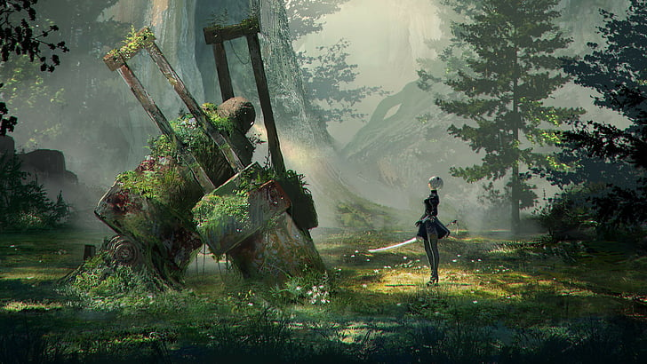
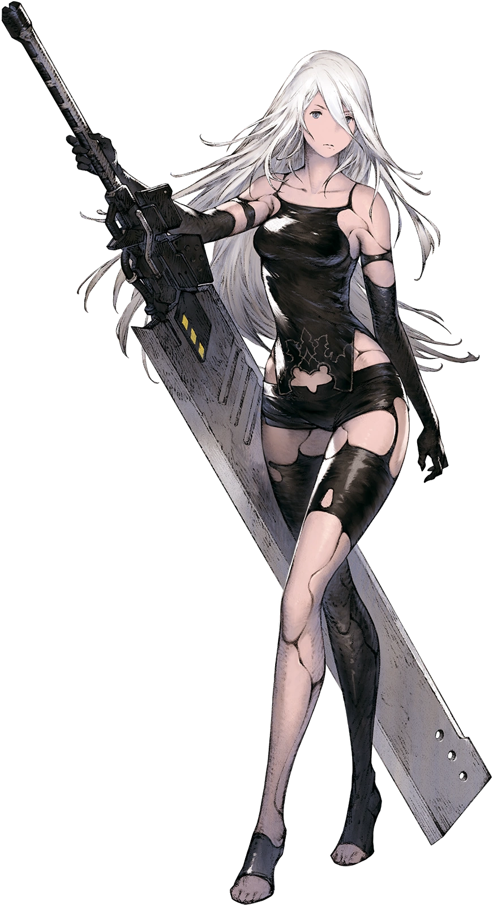
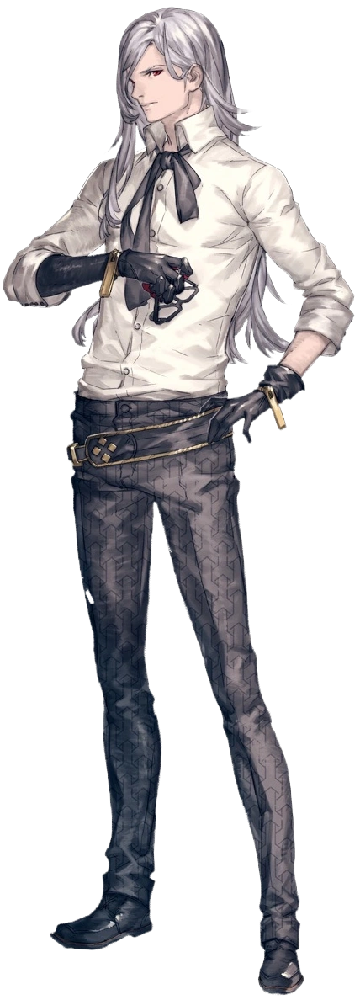

Introducción
NieR:Automata es un videojuego de acción ambientado en una época postapocalíptica. Desarrollado por Platinum Games y producido por Square Enix, de la mano de su famoso y extraño director, Yoko Taro, en 2017, NieR:Automata llegó a la industria del videojuego para demostrar por qué se puede considerar a este medio como el octavo arte.
El universo de NieR
NieR:Automata entra en el género de los Hack n' Slash, un género basado en enfrentarse a grandes cantidades de enemigos de forma rápida, asestando varias combinaciones de ataques, dando elección a las preferencias del jugador. Sin embargo, dentro de este mismo género, tiene ciertas variaciones como el cambio a entorno en 2D o el uso de vehículos teniendo un gameplay similar a "Asteroids" que le da una esencia única. Además, destaca por tener varios finales, un formato común para el entorno japonés, aunque NieR difiere cambiando partes cruciales en cada ruta, pues cada ruta involucra controlar a un personaje diferente, especialmente la ruta 'C', que es prácticamente comenzar un nuevo juego desde cero.
Las rutas A y B presentan los acontecimientos desde diferentes perspectivas. La ruta A sigue principalmente a 2B y 9S, mientras que la ruta B permite conocer los mismos acontecimientos desde la perspectiva de 9S, revelando información que anteriormente permanecía oculta.
Las rutas C y D continúan la historia después de los acontecimientos anteriores y presentan nuevos acontecimientos protagonizados por A2 y 9S. Estas rutas profundizan en los conflictos entre androides y máquinas y llevan la historia hacia su conclusión.
Entre sus varios finales, NieR:Automata cuenta con su aclamado final 'E', el final verdadero y definitivo de la historia. Este final se presenta al acabar con los finales 'A', 'B', 'C' y 'D', una vez concluidos, en los créditos saltará el famoso final "canon". El final 'E' de NieR:Automata consiste en que al jugador se le dará la opción de renegar ante los hechos ocurridos, y podrá batallar contra los propios créditos para impedir que el juego termine. Eventualmente, los créditos se volverán tan poderosos que será imposible hacerles frente, sin embargo, durante la batalla, se incorporarán aliados que nos ayudarán a salir victoriosos. Cuando logramos derrotar a los créditos, llegamos al final verdadero, uno que acaba siendo mucho más satisfactorio, pero esto no acaba aquí. Luego de la escena final, llega el clímax de todo; el juego nos pregunta si queremos ayudar a un completo desconocido, así como nosotros recibimos ayuda durante nuestra propia batalla, pero esta ayuda tiene un costo, para ayudar a un completo extraño, debemos borrar nuestra partida con todos sus datos. Es necesario aclarar que, para este punto del juego, lo normal es llevar, como mínimo, 30 horas invertidas, esto si el jugador se centró en las misiones principales y dejó lo secundario de lado. Ahí es cuando el jugador se da cuenta que logró llegar hasta el final porque hubo otro jugador que sacrificó su partida por él, un completo extraño que le regaló al menos 30 horas de su vida para que este pudiera terminar su partida. Esto precisamente es lo que hace tan bello a NieR:Automata, es un ejemplo perfecto de algo que solo se podría lograr a través del medio del videojuego, y una prueba clara de que hay bases sólidas para llamar a este medio el "Octavo Arte".
NieR:Automata forma parte de un universo mucho más amplio. La saga incluye otras historias y personajes que exploran temas como la identidad, la humanidad, el sacrificio y la esperanza. Entre estas obras se encuentra NieR Replicant, que presenta acontecimientos relacionados con el origen de este universo.

Personajes importantes

2B

9S

A2

Pascal

Commander White

Adam

Eve
¿Conocías NieR:Automata?
¡Llena este formulario para saber si conocías y qué opinas de NieR:Automata, tu opinión es importante!
Información adicional
Más sobre NieR:Automata